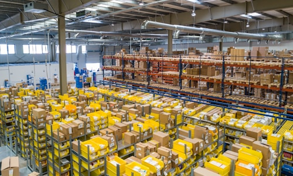

海运服务
经济高效的海运解决方案，适合大批量货物的长期运输

专业海运服务
Bio-Chain以精确性管理国际海运，提供完整的文件支持（信用证、提单）、内部保险以及通过卡车、铁路或驳船的多式联运协调。
我们为标准和专业货物提供门到门服务，包括温控或超大货物。我们的专业知识包括使用冷藏、平板和其他集装箱类型，以满足您货物的特定要求。
无论是一次性还是持续流程，我们都确保从始发地到最终目的地的可靠、安全的海运物流解决方案。
海运服务优势
成本效益：海运是最经济的国际运输方式，适合大批量货物，能够显著降低运输成本。
运载能力：海运具有巨大的运载能力，能够运输超重、超大货物，满足各种特殊需求。
环保友好：相比空运，海运的碳排放量更低，更符合环保要求。
稳定性：海运受天气影响相对较小，运输过程更加稳定可靠。

海运服务类型
整箱运输（FCL）：适合大批量货物，提供完整的集装箱运输服务，确保货物安全。
拼箱运输（LCL）：适合小批量货物，与其他货物共享集装箱，降低运输成本。
散货运输：处理散装货物，如粮食、矿石等，提供专业的散货运输服务。
冷藏运输：配备冷藏集装箱，确保温度敏感货物在运输过程中的稳定性。
危险品运输：具备危险品运输资质，安全运输各类危险品和受管制货物。
海运服务流程
1. 货物接收
专业团队接收货物，进行初步检查和分类，确保货物符合海运要求。
2. 集装箱装载
根据货物特性选择合适的集装箱类型，进行专业装载和固定。
3. 文件处理
处理所有必要的海运文件，包括提单、保险单据、清关文件等。
4. 海运安排
安排合适的船舶和航线，确保货物按时启航，实时跟踪运输状态。
5. 清关服务
协助办理目的地清关手续，确保货物顺利通关。
6. 最终配送
安排最后一公里配送，确保货物安全到达最终目的地。